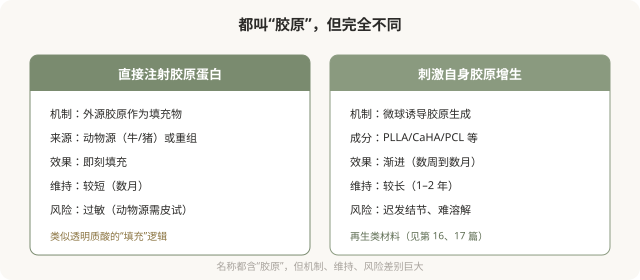

先说结论：“胶原蛋白”在注射领域有两种完全不同的思路：一种是直接注射胶原蛋白（动物源或重组）作为填充物，另一种是用再生刺激剂诱导自身产生胶原。两者机制不同，不可混为一谈。重组胶原蛋白是近年兴起的新方向，宣传“生物相容性好”“自然”，但它有维持时间、过敏风险、远期数据等考量，“新”不等于“更好”或“无风险”。
两种“胶原”思路的区别

直接注射胶原蛋白的历史与现状
胶原蛋白注射并非新事物。早期的动物源胶原（牛胶原）是最早的填充材料之一，但因维持时间短、过敏风险（需皮试）而逐渐被透明质酸取代。近年重组胶原蛋白（通过生物技术生产的胶原，无需动物来源）兴起，宣传“生物相容性好”“低免疫原性”，重新进入市场。
《重组胶原或将成为新的医美价值投资》（2025-11-11，李滨医美之滨）一文将重组胶原定位为“高频、小额、低风险”的底层资产，类似保妥适的崛起逻辑。这是文章中的观点，指向市场层面，当前产品的临床数据、注册状态和市场表现需另行核验。
重组胶原蛋白的考量
- 维持时间：多数重组胶原蛋白产品的维持时间短于交联透明质酸，可能需要更频繁补打。
- 过敏：虽宣传低免疫原性，但仍有过敏可能，严重过敏虽罕见但需警惕。
- 远期数据：作为较新的方向，部分产品的长期安全性和效果数据相对有限。
- 适应证：不同产品获批的适应证不同，有些限用于特定部位。
- 市场宣传 vs 临床证据：“重组”“基因工程”等概念是技术亮点，但不等于“比透明质酸更好”。
不要被“胶原蛋白”四个字绕晕
“胶原蛋白”在消费者认知里几乎是“好东西”的代名词——皮肤需要胶原、胶原流失是衰老原因。这种认知被营销利用，让人觉得“打胶原蛋白”天然比“打玻尿酸”更高级、更安全。但注射领域的“胶原蛋白”是医疗器械，它的安全性、有效性、维持时间取决于具体产品的工艺和临床数据，而不是“胶原蛋白”这个名字的寓意。
与其他材料的比较维度
面对胶原蛋白类产品，可以问医生：
- 这是直接填充型还是刺激增生型？
- 来源是动物源还是重组？需不需要皮试？
- 这个产品的国家药监局注册证号？获批适应证是什么？
- 维持时间大概多久？和透明质酸比如何？
- 常见风险是什么？出问题怎么处理？
- 相比透明质酸，它在我的情况下有什么具体优势？
能讲清这些的医生，是在用医学逻辑帮你选择；含糊其辞只强调“胶原好”的，是在用概念卖货。
一个理性态度
重组胶原蛋白是注射领域的一个发展方向，可能有它的适用场景。但作为消费者：
- 不要因为是“新方向”就认为它更安全或更好。
- 不要因为是“胶原蛋白”就忽略它的医疗器械属性和风险。
- 让医生根据你的情况建议，而不是被营销概念推动。
- 确认产品正规、注册证可查、医生有经验。
“新”和“好”不是同义词。每一类材料都有它的特性、优势和代价，理解这些比追逐新概念更能保护你。
本文用于健康教育，不能替代面诊和个体化评估；胶原蛋白类注射属医疗器械，须使用有国家药监局注册证的产品，在正规医疗机构由具备资质的医师注射。